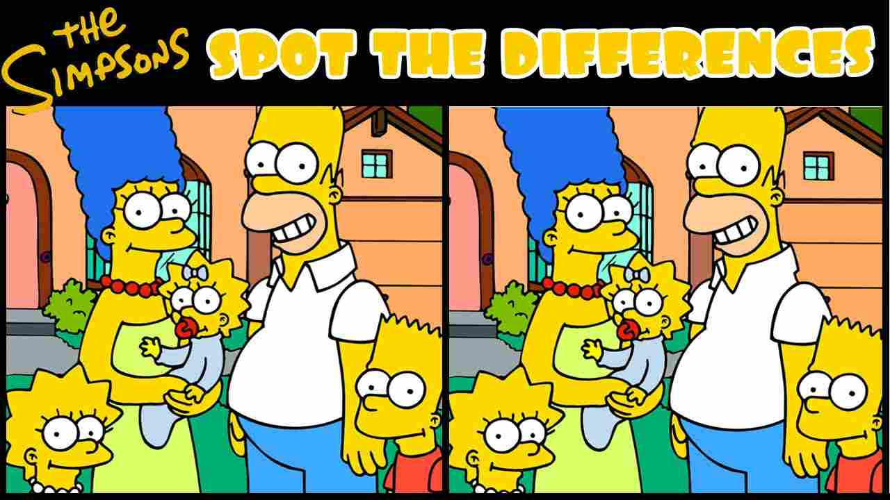

Perception affects behaviour and, because of this, psychologists are interested in situations that affect perception. For example, if we perceive mentally ill people as "bad" or "at fault", then our opinion of them and our corresponding behaviour toward them will reflect this perception. Individuals suffering from mental illnesses are often treated with less dignity than individuals suffering from physical illnesses. The problem is not the mental illness itself, but rather the interpretation we have of mental illness.
People tend to focus their attention on things they find interesting or important. It is easy, too, to focus too narrowly or on only the negative aspect of events. When our focus is skewed in this way, we do not get the entire "picture" and our complete understanding of events and situations is compromised.
This is something that researchers need to keep in mind when conducting psychological research and must consider when determining if their proposed research will in fact be answering the questions they want answered.
The following video highlights how important our focus is when it comes to perception and understanding.
Direct Link: https://youtu.be/vJG698U2Mvothis link opens in a new window/tab)
Question: How might this video be used in an experiment?
You could design various experiments using the video. For example, you might want to learn which gender noticed the gorilla more often - men or women. You could compare the results of teenagers to the results of people in their 30s. You might also test people one hour before they go to bed and compare the results to people one hour after they get up to see if being tired affects perception.
What about other possibilities?
Other possible visual-perceptual experiments could be conducted using cartoons. For example, you could obtain sets of "find-the-difference" cartoons (two versions of the same cartoon, one having a few subtle differences from the other) and determine the average time participants take to find the differences. Are children better at finding the differences than adults are? Does smell affect the time required to locate the differences in the cartoons? How does playing classical music versus rap music affect response time?
Note: You can often find these cartoons in the weekend edition of many mainstream newspapers.
